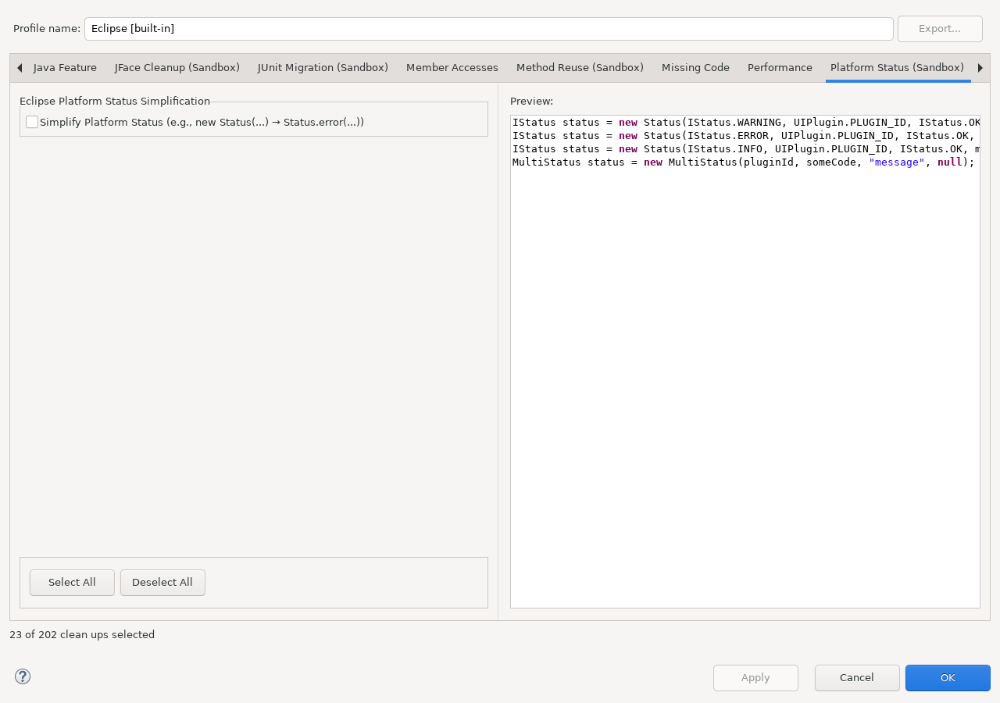

Modernizes verbose Eclipse Platform status construction to the supported status factory APIs.
This documentation is installed by sandbox_platform_helper_feature
together with the runtime plug-in. The runtime plug-in does not depend on this Help bundle.
new Status(...) construction patterns.Open Java > Code Style > Clean Up, edit a cleanup profile, and select Platform Status (Sandbox).

Continue with Using this feature and Reference, safety, and limitations.